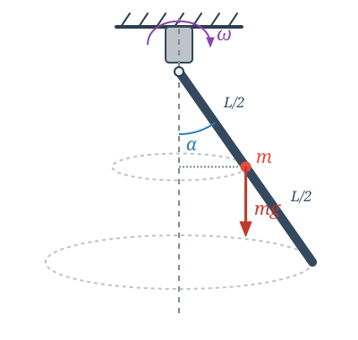

Példa
Egy tömegű, hosszúságú rúd a tetején csapágyazva van, és függőleges síkban lengéseket képes végezni. A rúd a csapágyazással együtt képes forogni a csapágyon átmenő függőleges tengely körül. Egy motor megforgatja a csapágyazást, és szögsebességű forgásban tartja. Mekkora szöget zár be a rúd a függőlegessel a forgása közben, ha ez a szög állandó?

A rúd pontjai körmozgást végeznek vízszintes síkban, tehát gyorsulásuk a centripetális gyorsulás. Az szög nem változik, vagyis a rúdnak nincs szöggyorsulása a vele együtt forgó koordináta-rendszerben. Van-e szöggyorsulás az inerciarendszerben? Ha felbontjuk a pontok gyorsulását rúdirányú és rúdra merőleges komponensre, akkor nem nulla szög esetén lesz a rúdra merőleges gyorsulás, amely szöggyorsulást jelent a vízszintes forgástengelyre vonatkozóan.
Írjuk fel a forgómozgás alapegyenletét a vízszintes tengelyre, amely körül a rúd elfordulhat!
Egyedül a nehézségi erőnek van nyomatéka:
Beírva ezeket és a rúd végpontra vonatkozó tehetetlenségi nyomatékát, a következő egyenletet kapjuk:
Ennek az egyenletnek általában két megoldása van.
- megoldás:
Ez stabil megoldás kis szögsebesség esetén. Egészen pontosan addig, amíg nem létezik a második megoldás.
- megoldás:
Innen kifejezhetjük értékét:
Mivel a koszinuszfüggvény értéke nem lehet nagyobb egynél:
Így a motor szögsebességének nagyobbnak kell lennie egy minimális kritikus értéknél, hogy ez a stabil elhajlási megoldás egyáltalán létezhessen:
Megmutatható, hogy amint a motor fordulatszáma átlépi ezt a kritikus határt, a függőleges helyzet instabillá válik, és a rúd magától kitér a stabil egyensúlyi szögbe.
Analógia a haladó és forgó mozgás között
| Haladó mozgás | Forgó mozgás |
|---|---|
| Út () | Szög () |
| Sebesség () | Szögsebesség () |
| Gyorsulás () | Szöggyorsulás () |
| Erő () | Forgatónyomaték () |
| Tömeg () | Tehetetlenségi nyomaték () |
| Lendület / Impulzus () | Perdület / Impulzusmomentum () |
Feladatok
1. Feladat (Támaszerők)
Határozd meg a csapágyra ható támaszerő vízszintes és függőleges komponensét a fenti példában abban az esetben, amikor a motor szögsebességgel forog, és a rúd beállt a stabil egyensúlyi helyzetébe! (Tipp: Írd fel a rúd tömegközéppontjának vízszintes körpályájára a haladó mozgás alapegyenletét!)
2. Feladat (Forgó gyűrű)
Egy sugarú, vékony drótból készült körgyűrű a függőleges átmérője körül állandó szögsebességgel forog. Egy tömegű kis gyöngyszem súrlódásmentesen csúszhat a gyűrűn. * a) Milyen szögsebesség esetén lesz a gyöngyszem stabil egyensúlyi helyzete a gyűrű legalsó pontján kívül? * b) Határozd meg ezt az egyensúlyi helyzetet (a függőlegessel bezárt szöget) a szögsebesség függvényében!